×
Data Fetch Settings
Theme:
OSM-Default
Chromatic Glass (Light)
Sketchbook (Light)
Paper & Ink Wash (Light)
Synthwave Sunset (Dark)
Retro Terminal (Dark)
Liquid Metal (Dark)
Deep Ocean (Dark)
Nordic Night (Dark)
Dark Blue
Dark Midnight
Solar Flare (Dark)
Bio-Luminescent (Dark)
Celestial Silk (Dark)
Min Latitude:
Max Latitude:
Min Longitude:
Max Longitude:
Use Current Map Area
Clear Map Area Filter
Min Magnitude:
Max Magnitude:
Result Limit:
Start Date:
End Date:
Update & Refetch
☰
Loading...
0%
Earthquake Data (
0
entries)
#
Station
Place
Magnitude
Depth (km)
Latitude
Longitude
Time